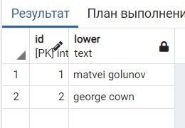
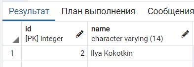

Запросы для лабораторной работы 5
Запрос 1
Найти номера дешевле 1000, находящиеся не выше 1-го этажа
SELECT * from hotel_number
WHERE hotel_number.cost < 1500
AND hotel_number.floor < 2;

Запрос 2
Найти номера, в которых уборка проводиться после определенного времени в течении дня, а также после выбранной даты.
SELECT hotel_number.id, hotel_number.type, hotel_number.cost,
hotel_number.floor, hotel_number.status, clean.date AS clean_date,
clean.time AS clean_time
FROM clean
JOIN hotel_number
ON clean.hotel_number_id = hotel_number.id
WHERE clean.time > '10:00'
AND clean.date > '2021-02-21';

Запрос 3
Найти данные о номере клиенте - время уборки; время, когда в номер заселелились; кто заселилися.
SELECT clean.time AS clean_time, clean.date AS clean_date,
check_in.date AS check_in_date, klient.name
FROM public.clean
JOIN public.check_in
ON clean.hotel_number_id = check_in.hotel_number_id
JOIN public.klient
ON check_in.klient_id = klient.id;

Запрос 4
Вывести все номера с ценой за каждый и датой заселения, по которой список отсортирован.
SELECT hotel_number.id AS hotel_room, hotel_number.cost , check_in.date AS check_in_date
FROM hotel_number
JOIN check_in
ON hotel_number.id = check_in.hotel_number_id
ORDER BY check_in_date;

Запрос 5
Узнать дату заселения в определенный номер.
SELECT hotel_number.id, check_in.date
FROM hotel_number
JOIN check_in
ON hotel_number.id = check_in.hotel_number_id
WHERE hotel_number.id = 2;

Запрос 6
Если номер занят клиентом, узнать сколько месяцев он проживает в нем.
SELECT EXTRACT(MONTH FROM now()) - EXTRACT(MONTH FROM check_in.date) AS months
FROM hotel_number
JOIN check_in
ON hotel_number.id = check_in.hotel_number_id
WHERE hotel_number.status = 1;

Запрос 7
Вывести количество клиентов, заселенных в этом году.
SELECT count(*) AS value_of_klient
FROM check_in
WHERE EXTRACT(YEAR from date) = EXTRACT(YEAR FROM NOW());

Запрос 8
Вывести имена клиентов строчными буквами
SELECT id, lower(name)
FROM klient;

Запрос 9
Вывести id уборщика, прибиравшего в этом номере.
SELECT cleaner.id, cleaner.name
FROM cleaner
JOIN clean
ON cleaner.id = clean.cleaner_id
WHERE clean.hotel_number_id = 1;

Запрос 10
Вывести уборщика, который работал в смену определенного администратора в определенном номере.
SELECT name, id
FROM cleaner
WHERE id IN (
SELECT cleaner_id
FROM clean
WHERE administrator_id = 1
AND hotel_number_id = 2
);